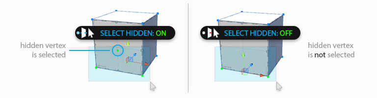
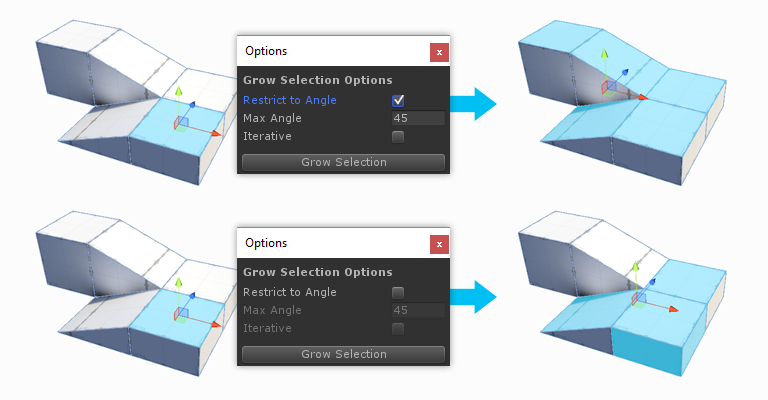
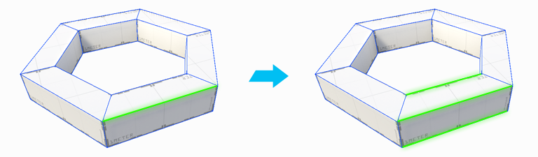

Select Hidden
Select Hidden
Determines whether hidden elements are selected or ignored, when drag-selecting. This is a toggle button, click to change modes:
| Toolbar Icon | Description |
|---|---|
| On: all elements are selectable, regardlesss of their visibility | |
| Off: drag selection will ignore any elements that cannot currently be seen |

 Handle Alignment
Handle Alignment
Keyboard Shortcut : P
Choose how the scene handles will be oriented when selecting elements. This is a toggle button; click to change modes:
| Toolbar Icon | Description |
|---|---|
| Global: Similar to a compass, the handle orientation is always the same, regardlesss of local rotation. | |
| Local: Similar to "left vs right", handle orientation is relative the object's rotation. | |
| Planar: This special mode aligns the handles to exact normal direction of the selected face. |

 Grow Selection
Grow Selection
Keyboard Shortcut: ALT G
Expands the selection outward to adjacent faces, edges, or vertices.
 Options:
Options:
| Setting | Description |
|---|---|
| Restrict To Angle | Only Grow Selection to faces within a specified angle |
| Max Angle | The angle to use when Restrict to Angle is On |
| Iterative | Only Grow Selection to adjacent faces, with each button press |

 Shrink Selection
Shrink Selection
Keyboard Shortcut : ALT SHIFT G
Does the opposite of Grow Selection: removes the elements on the perimiter of the current selection.
Invert Selection
Keyboard Shortcut : CTRL SHIFT I
Selects the inverse of the current selection. All unselected elements will become selected, the current selection will be unselected.
 Select Edge Loop
Select Edge Loop
Keyboard Shortcut : ALT L
Selects an edge loop from each selected edge.

 Select Edge Ring
Select Edge Ring
Keyboard Shortcut : ALT R
Selects an edge ring from each selected edge.
